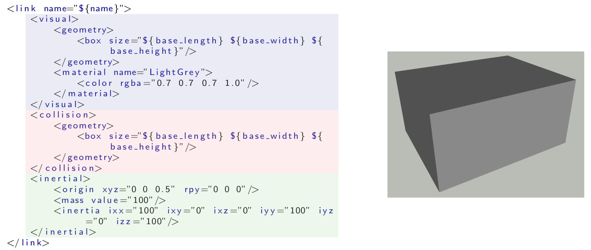
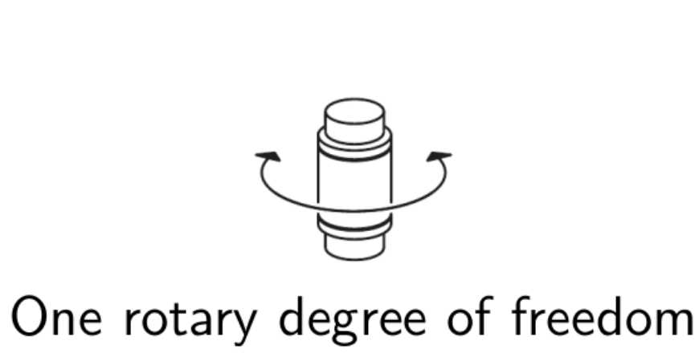
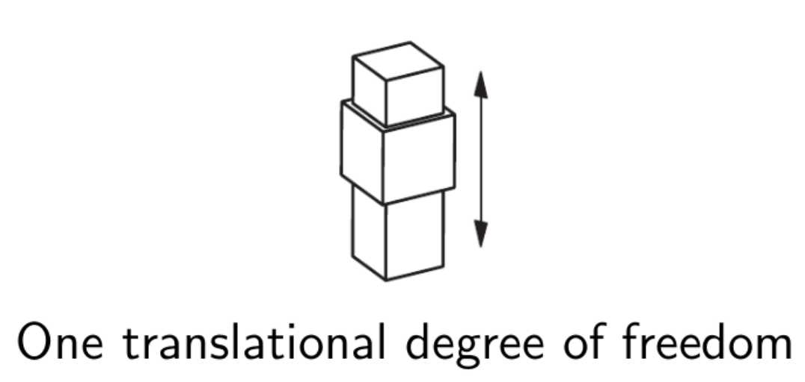
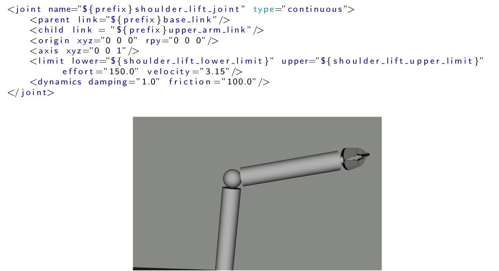
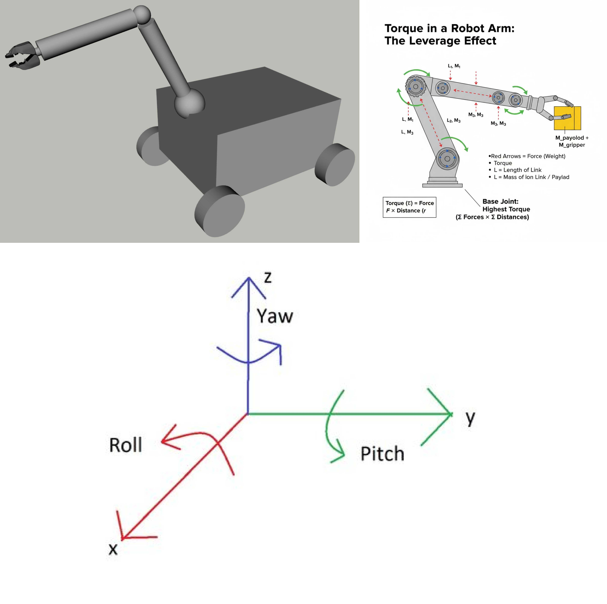

A succinct review of the Unified Robot Description Format for environmental modeling.
URDF (Unified Robot Description Format) was designed to describe a robot's physical structure (links) and connections (joints). URDF can be regarded as the mathematical model of the robot body as it provide information about the physical geometry, appearance, kinematics, dynamics, and statics. Once written, the URDF file can be loaded in sumalors such as RViz, Gazebo, Mujoco, Unreal Engine, PyBullet. It is essential in the design phase (model validation), development phase (part of program), and execution phase (verification and debugging).
A Link represents a physical object in the environment (e.g., a box, furniture). It is defined by parameters critical for physics-based simulations (e.g., Gazebo):

Joints connect links and define their movement relative to each other. For environmental models, two types are fundamental for dynamic objects:
Revolute Joints
Allow for rotary motion (e.g., a door hinge allowing a fridge door to swing open). Defined by type, axis, and motion limits.

Prismatic Joints
Perform linear motion (e.g., a drawer sliding in and out of a cabinet). Defined by type, axis, and motion limits.


For complex robots, the Universal Robot Description Format (URDF) leverages concepts of modularity and parameterization to achieve high readability, reusability, and configurability. Instead of creating a single, monolithic file for the entire system, the robot is built by defining its components (such as individual links, joints, a gripper, or a mobile base) in separate URDF or Xacro files.
These separate definitions are then brought together using an include mechanism in a top-level URDF file. This composition allows developers to maintain and update sub-assemblies independently. For example, a standard wheel module can be included multiple times, greatly simplifying the definition of a four-wheeled base.
The key to true reusability lies in parameterization. Instead of hardcoding dimensions, masses, or joint limits, these values are treated as variables. The syntax ${param_name} is used throughout the component files to reference these external values. When the top-level URDF file includes a sub-assembly, it can pass specific values to these parameters, allowing a single component file to describe many variations of the same part (e.g., a "motor_unit" with different torque limits based on the passed-in parameter). This capability makes the robot model highly flexible and scalable.
This is the consolidated XACRO structure for your robot, including the main file and the externally defined base macro. Note the inclusion of the external macro and the parameterized calls.
<?xml version="1.0"?> <robot name="red_cylinder_robot_arm" xmlns:xacro="http://www.ros.org/wiki/xacro"> <xacro:include filename="base_macros.xacro" /> <!-- External Base Macro Included --> <xacro:macro name="cylinder_link" params="link_name color_name rgba_value radius length mass_value"> <link name="${link_name}"> <inertial> <origin xyz="0 0 0" rpy="0 0 0"/> <mass value="${mass_value}"/> <inertia ixx="${(mass_value/12.0) * (3*radius*radius + length*length)}" ixy="0.0" ixz="0.0" iyy="${(mass_value/12.0) * (3*radius*radius + length*length)}" iyz="0.0" izz="${(mass_value/2.0) * (radius*radius)}" /> </inertial> <visual> <origin xyz="0 0 0" rpy="0 0 0"/> <geometry><cylinder radius="${radius}" length="${length}"/></geometry> <material name="${color_name}"><color rgba="${rgba_value}"/></material> </visual> <collision> <origin xyz="0 0 0" rpy="0 0 0"/> <geometry><cylinder radius="${radius}" length="${length}"/></geometry> </collision> </link> </xacro:macro> <xacro:base_link_macro link_name="base_link" size_x="0.2" size_y="0.2" size_z="0.02" mass_value="2.0" xyz_origin="0 0 0.01" /> <link name="slider_link"> <inertial> <origin xyz="0.1 0 0" rpy="0 0 0"/> <mass value="0.5"/> <inertia ixx="0.005" ixy="0.0" ixz="0.0" iyy="0.005" iyz="0.0" izz="0.001"/> </inertial> <visual> <origin xyz="0.1 0 0" rpy="0 0 0"/> <geometry><box size="0.2 0.05 0.05"/></geometry> <material name="blue"><color rgba="0.0 0.0 0.8 1.0"/></material> </visual> <collision><geometry><box size="0.2 0.05 0.05"/></geometry></collision> </link> <xacro:cylinder_link link_name="red_cylinder_link" color_name="red" rgba_value="1.0 0.0 0.0 1.0" radius="0.05" length="0.2" mass_value="0.5" /> <link name="world"/> <joint name="world_to_base_joint" type="fixed"> <parent link="world"/> <child link="base_link"/> <origin xyz="0 0 0.01" rpy="0 0 0"/> </joint> <joint name="prismatic_slider_joint" type="prismatic"> <parent link="base_link"/> <child link="slider_link"/> <origin xyz="0 0 0.01" rpy="0 0 0"/> <axis xyz="1 0 0"/> <limit effort="100.0" velocity="0.5" lower="-0.1" upper="0.2"/> </joint> <joint name="revolute_cylinder_joint" type="revolute"> <parent link="slider_link"/> <child link="red_cylinder_link"/> <origin xyz="0.2 0 0" rpy="0 0 0"/> <axis xyz="1 0 0"/> <limit effort="100.0" velocity="0.5" lower="-3.57" upper="3.57"/> </joint> </robot>
<?xml version="1.0"?> <robot xmlns:xacro="http://www.ros.org/wiki/xacro"> <xacro:macro name="base_link_macro" params="link_name size_x size_y size_z mass_value xyz_origin"> <link name="${link_name}"> <inertial> <origin xyz="${xyz_origin}" rpy="0 0 0"/> <mass value="${mass_value}"/> <inertia ixx="${(mass_value/12.0) * (size_y*size_y + size_z*size_z)}" ixy="0.0" ixz="0.0" iyy="${(mass_value/12.0) * (size_x*size_x + size_z*size_z)}" iyz="0.0" izz="${(mass_value/12.0) * (size_x*size_x + size_y*size_y)}" /> </inertial> <visual> <origin xyz="0 0 0" rpy="0 0 0"/> <geometry><box size="${size_x} ${size_y} ${size_z}"/></geometry> <material name="grey"> <color rgba="0.5 0.5 0.5 1.0"/> </material> </visual> <collision> <geometry><box size="${size_x} ${size_y} ${size_z}"/></geometry> </collision> </link> </xacro:macro> </robot>
